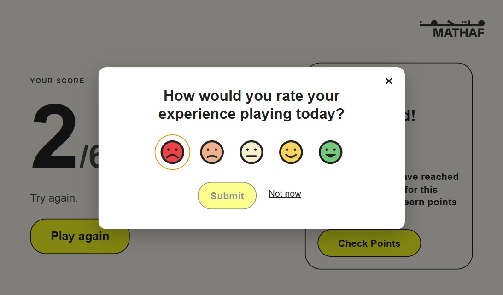
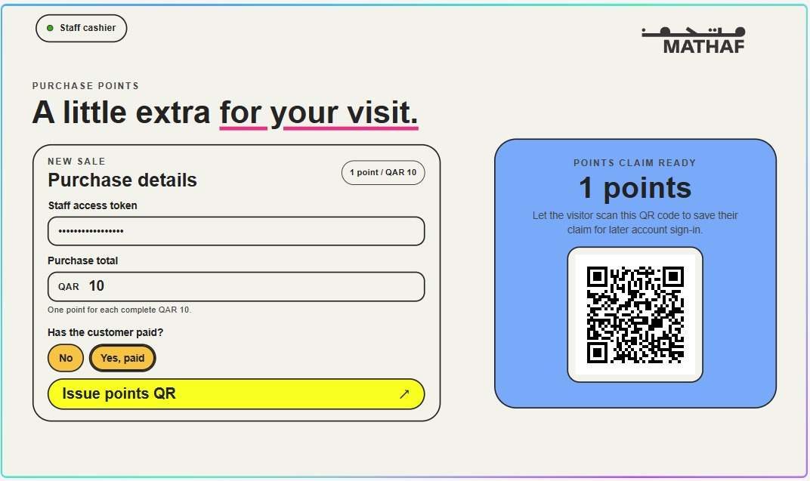
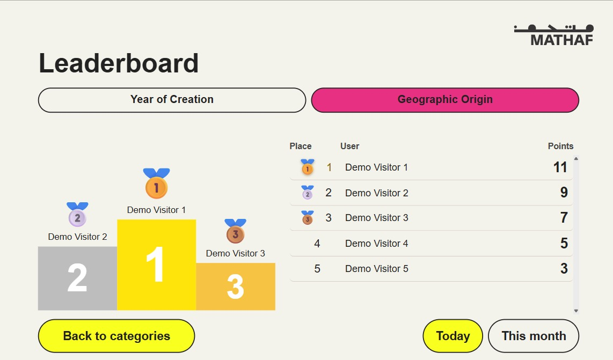
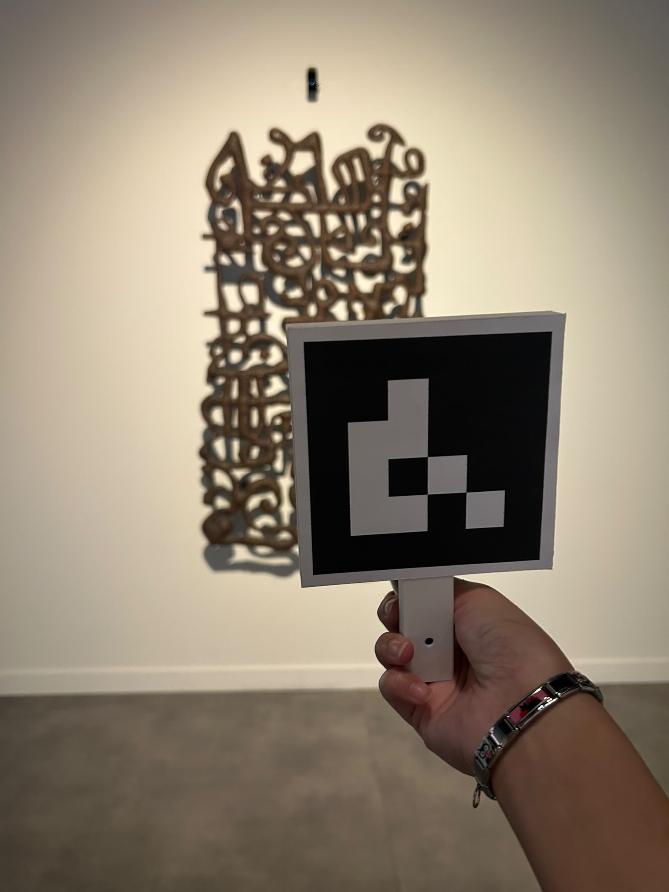

Week 8: Loyalty Points, Leaderboards and Interactive Art
Sunday: I added an end-of-game feedback popup to the museum quiz. Players can rate their experience using five colourful faces, based on the inspiration image. I also updated how feedback is stored in SQLite so it records the category, rating, language, whether the feedback was saved, and the game duration. I removed the unnecessary question_count field and added a migration so feedback already saved by visitors is preserved when the updated app starts. While testing, I found stray text that caused a SQL syntax error when the feedback table was created and fixed it. I also thought about using QR codes for visitors returning to the museum, but realised that communication between separate devices over the network would not work for this setup.
I then began adding a points system that connects quiz results to a visitor's card. The first quiz in a category banks its score, and the second quiz awards both scores as points. A third quiz earns half its score, rounded down, and that category cannot earn more points again until the next day. Visitors can also check their balance, see how close they are to 40 points, and review their points history.


Monday: I worked on a separate loyalty idea where visitors earn points after buying souvenirs. For every QAR 10 spent, they receive one point, and after paying, staff can show them a QR code that the visitor scans to add the points to their wallet. I updated the CSS and made the purchase-details section more compact while keeping the main fields and payment controls easy to read. I tested a paid QAR 20 purchase and confirmed it generated a QR code worth two points, so the cashier page was ready to demonstrate.
I also had a quick meeting with Christophe to discuss the loyalty system and the device connection errors. He suggested using a code and treating the loyalty system as Version 2, which would give us more time to improve it and keep the current version simpler.

Tuesday: After learning that Otba was working on the artist page layouts, I moved on to the leaderboard. I created daily and monthly leaderboards for both quiz categories. Daily scores count each correctly answered question once per visitor, with a maximum of 12 points a day. Monthly scores combine quiz results across the month and show anonymous visitor names. I also added optional demo entries for presentations and verified the leaderboard with passing tests.
To make the leaderboard more interactive, I added scrolling so visitors can find their own position. Their placement is highlighted in green, and they can see who is ranked just before and after them.

Wednesday: I visited the Doha Design, Arab Design, MIHAB, Liwan, and other exhibitors in Al Asmakh. I looked at how technology was being used in the artworks, including pieces built with Raspberry Pi. One example used a laser and sensor: when the laser was pointed at the artwork, it detected the light and produced sound. Seeing these installations gave me a better idea of the different ways technology can respond to visitors and become part of an artwork.
